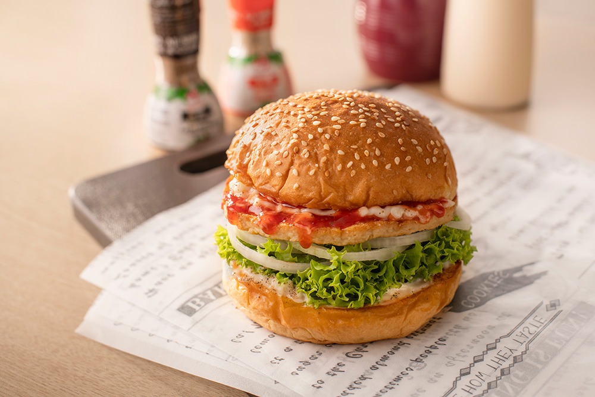

BBQ Chicken Pizza

This BBQ chicken pizza has spicy barbecue sauce, diced chicken, peppers, onion, and cilantro, all covered with cheese and baked to bubbly goodness!
Mushroom Pizza

Mushroom pizza is paired with complementary ingredients to balance the flavors and textures. additions include mozzarella cheese , garlic, onions, rosemary, and a drizzle of olive oil. Some variations also incorporate additional toppings like spinach, roasted garlic, or caramelized onions.
Classic Burger
Classic Burger is apopular food item consisting of a cooked patty of ground beef, placed inside a sliced bun or roll. it is accompanied by various toppings and condiments such as lettuce, tomato, onion, cheese, pickles, ketchup, mustard, and mayonnaise.
Chicken Fingers

Chicken fingers are a popular finger food made from chicken breast meat. They are typically boneless and skinless, and the chicken breast is cut into long, thin strips resembling fingers. These strips are coated in a seasoned breading and then deep-fried until golden and crispy.
Chicken Wings
Chicken wings are a popular and beloved food item that is often enjoyed as an appetizer or main course. They are made from the chicken wing joint, typically separated into two parts: the drumette and the flat.